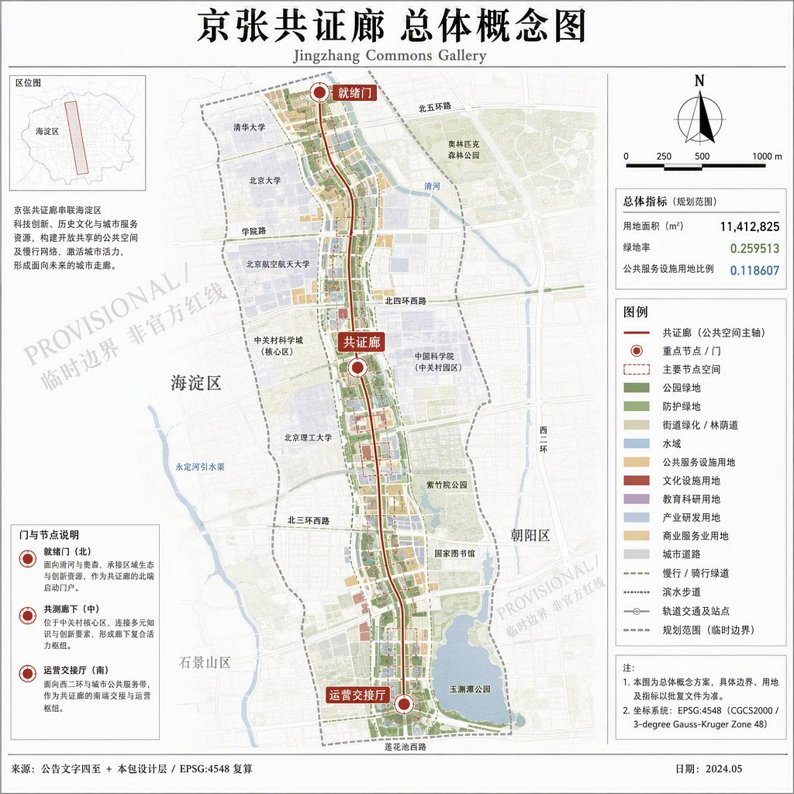
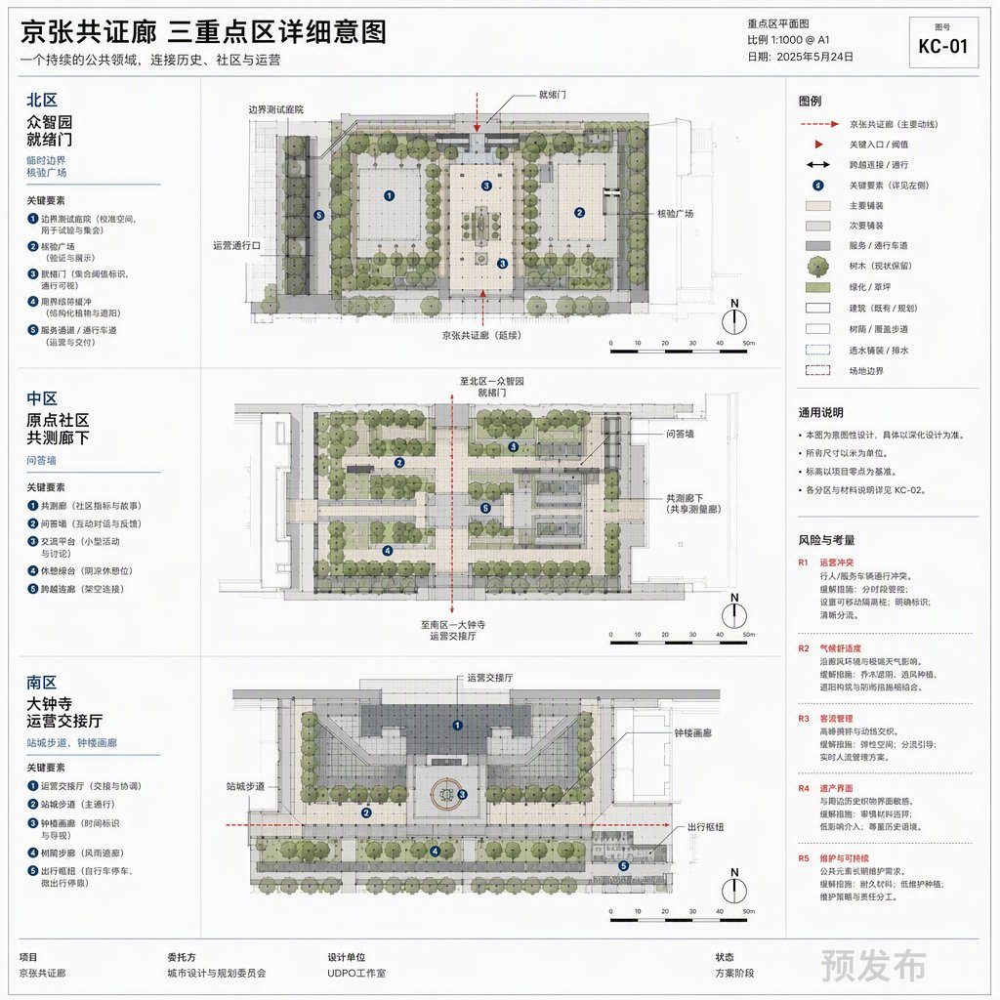
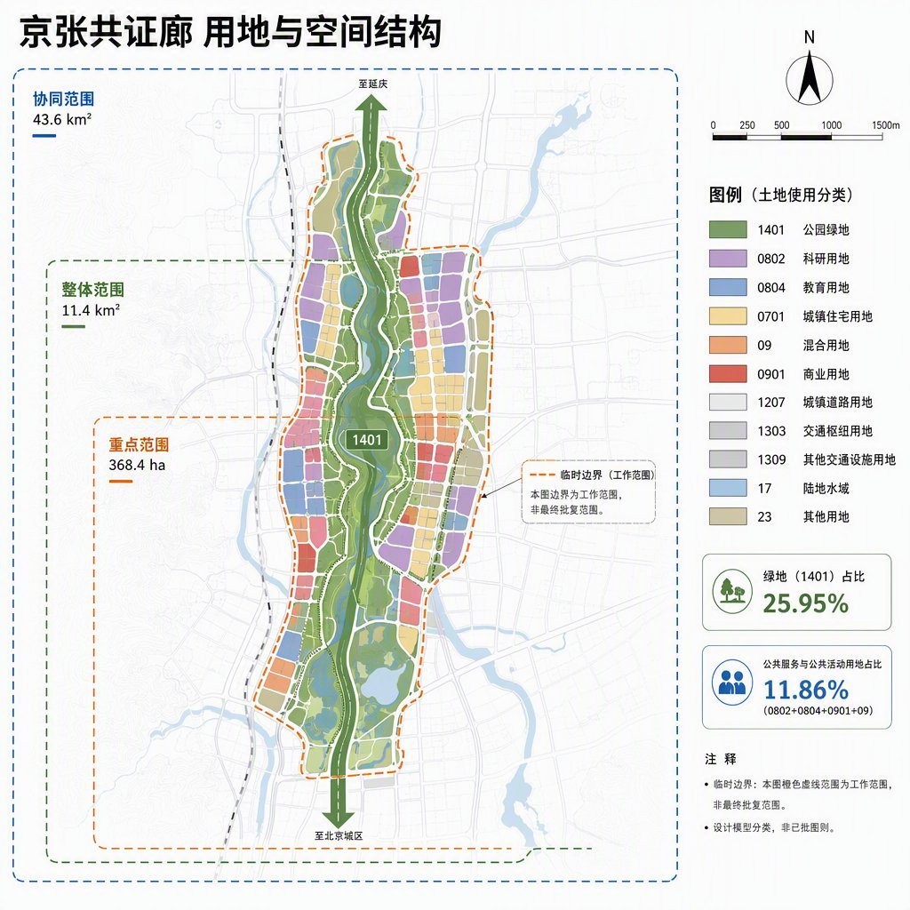
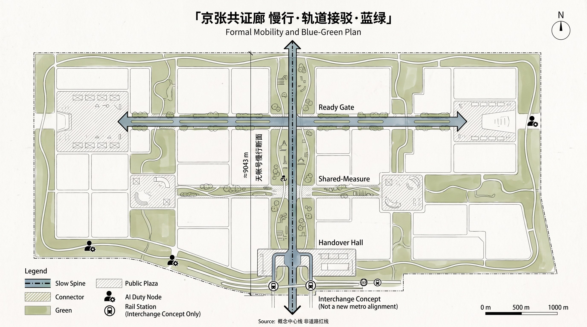
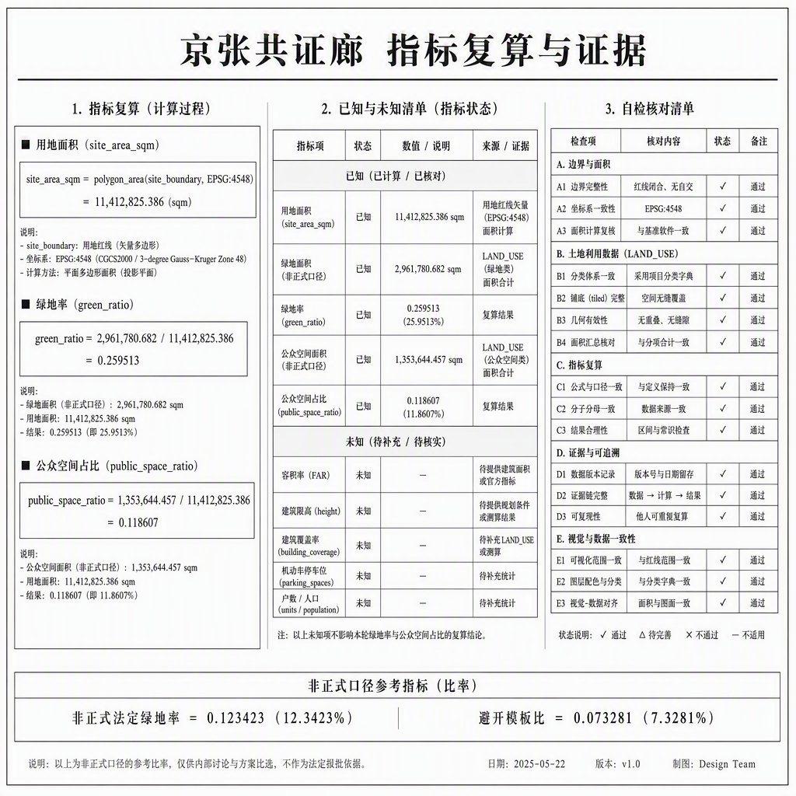

统筹研究范围
43.6 km²：命名、8 个机制案例、两翼接口。不新画红线。
可走、可核、可关。一条公共核验廊串联就绪门 / 共测廊下 / 运营交接厅。
权威数据以 GeoJSON 与 metrics.json 为准。本页无 CDN、无远程瓦片、无外嵌页面。场地边界为临时约束，非正式红线。
南北共证廊为公共核验脊；三门落在三重点区；虚线为临时场地边界。

43.6 km²：命名、8 个机制案例、两翼接口。不新画红线。
11.4 km² 临时面：共证廊剖分、慢行、蓝绿、分期。
368.4 ha：三门差异化详细意图，area_id 固定。
就绪门。测试场贴边，不占无账号断面。
共测廊下。近校测量日与问答墙。
运营交接厅。站城步行与班次看板。

廊 1401，北段 0802，近校 0804 / 0701，中段 09，南段 0901 / 0702。铺满临时边界，设计模型分类。

无账号慢行主脊约 9,042.827 m，三门东西横联。概念中心线，非道路红线。
绿脊 + 北园 + 南边；公共面为慢行断面 + 三门广场。青年第三空间与夜间普通路径写在场景卡。

六处概念基底，复算 1,287,206.112 m²，低置信，不是实测轮廓。高度与容积率 unknown。
CG-01 至 CG-10：近廊与三门，中横联与缝合，远两翼接口，条件项为正式几何替换后重算。
算法：场地面积 = site_boundary 在 EPSG:4548 的面积；绿地率 = 绿地并集 / 场地；公共空间率 = 公共并集 / 场地。非正式法定控制值。

compliance_matrix 覆盖公告 1.3 / 1.4 / 1.5 与 agent.1–6。standard_matrix 与 design_depth_matrix 证明标准与深度。核心深度项 complete，控规类以 completeness_limited_by 披露缺口。
本页提交前须通过 deterministic / spatial / visual / professional 四门。当前边界：临时约束，intake 可评内容，正式红线到达后全量重算。
OFFICIAL-ANNOUNCEMENT、AGENT-TASKBOOK、SITE-PACKAGE、SOURCE-REGISTRY、PROCESSED-FACT-PACK、BOUNDARY-SOURCE、KEY-AREA-SOURCE。详见 sources.json。
A-PROVISIONAL-BOUNDARY、A-CONTROLS-001、A-HERITAGE-HINT、A-NO-LOGIN-PATH、A-PRIVACY-MIN。容积率与高度保持 unknown。